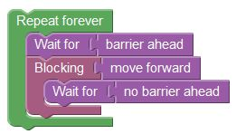

In this level the following scenario blocks 'move forward' until a 'no barrier ahead' event that signals that the path is clear.

You can continue experimenting with this level or you can proceed to the next level!